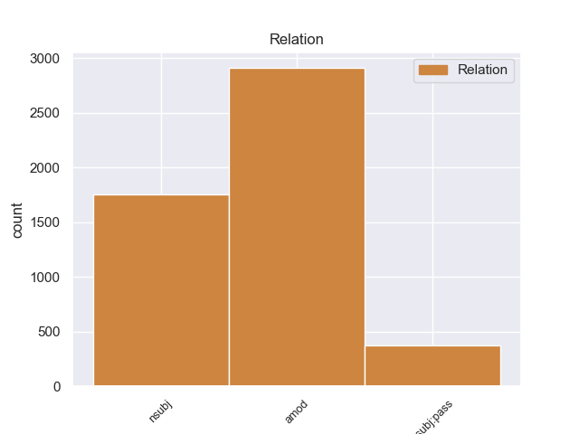
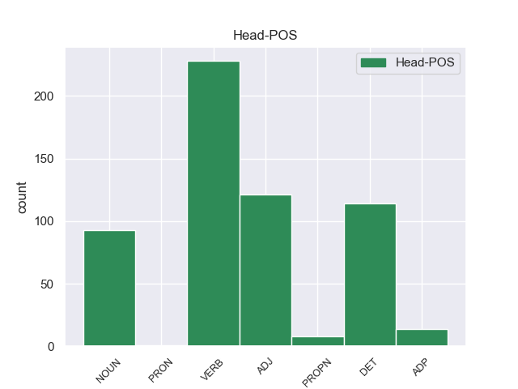
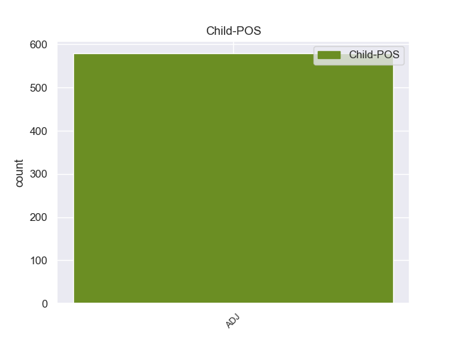

Distribution of features within this leaf



Agreement Rules sorted by frequency.
- When the dependent token is the nominal modifier(nmod) of the head token, and the dependent token is ADJ.
1 Θα _ _ _ _ 0 _ _ _
2 ήθελα _ _ _ _ 0 _ _ _
3 να _ _ _ _ 0 _ _ _
4 επιστήσω _ _ _ _ 0 _ _ _
5 την _ _ _ _ 0 _ _ _
6 προσοχή _ _ _ _ 0 _ _ _
7 όλων _ _ _ _ 0 _ _ _
8 των _ _ _ _ 0 _ _ _
9 συναδέλφων _ _ _ _ 0 _ _ _
10 σ _ _ _ _ 0 _ _ _
11 το _ _ _ _ 0 _ _ _
12 γεγονός _ _ _ _ 0 _ _ _
13 ότι _ _ _ _ 0 _ _ _
14 , _ _ _ _ 0 _ _ _
15 εάν _ _ _ _ 0 _ _ _
16 υπάρχουν _ _ _ _ 0 _ _ _
17 κάποιες _ _ _ _ 0 _ _ _
18 ελευθερίες _ _ _ _ 0 _ _ _
19 οι _ _ _ _ 0 _ _ _
20 οποίες _ _ _ _ 0 _ _ _
21 είναι _ _ _ _ 0 _ _ _
22 ζωτικής _ _ _ _ 0 _ _ _
23 σημασίας _ _ _ _ 0 _ _ _
24 για _ _ _ _ 0 _ _ _
25 την _ _ _ _ 0 _ _ _
26 άσκηση άσκηση VERB _ Case=Acc|Gender=Fem|Number=Sing 0 _ _ _
27 του _ _ _ _ 0 _ _ _
28 λειτουργήματος _ _ _ _ 0 _ _ _
29 της _ _ _ _ 0 _ _ _
30 δημόσιας _ _ _ _ 0 _ _ _
31 εκπροσώπησης _ _ _ _ 0 _ _ _
32 , _ _ _ _ 0 _ _ _
33 ιδίως _ _ _ _ 0 _ _ _
34 για _ _ _ _ 0 _ _ _
35 ένα _ _ _ _ 0 _ _ _
36 Κοινοβούλιο _ _ _ _ 0 _ _ _
37 σαν _ _ _ _ 0 _ _ _
38 το _ _ _ _ 0 _ _ _
39 δικό _ _ _ _ 0 _ _ _
40 μας _ _ _ _ 0 _ _ _
41 , _ _ _ _ 0 _ _ _
42 η _ _ _ _ 0 _ _ _
43 ελευθερία _ _ _ _ 0 _ _ _
44 της _ _ _ _ 0 _ _ _
45 επικοινωνίας επικοινωνίας ADJ _ Case=Acc|Gender=Fem|Number=Sing 26 nmod _ _
46 με _ _ _ _ 0 _ _ _
47 άλλους _ _ _ _ 0 _ _ _
48 πολίτες _ _ _ _ 0 _ _ _
49 και _ _ _ _ 0 _ _ _
50 με _ _ _ _ 0 _ _ _
51 τους _ _ _ _ 0 _ _ _
52 πολίτες _ _ _ _ 0 _ _ _
53 τρίτων _ _ _ _ 0 _ _ _
54 χωρών _ _ _ _ 0 _ _ _
55 , _ _ _ _ 0 _ _ _
56 καθώς _ _ _ _ 0 _ _ _
57 και _ _ _ _ 0 _ _ _
58 η _ _ _ _ 0 _ _ _
59 ελευθερία _ _ _ _ 0 _ _ _
60 μετακίνησης _ _ _ _ 0 _ _ _
61 , _ _ _ _ 0 _ _ _
62 είναι _ _ _ _ 0 _ _ _
63 κρίσιμες _ _ _ _ 0 _ _ _
64 για _ _ _ _ 0 _ _ _
65 τη _ _ _ _ 0 _ _ _
66 διεκπεραίωση _ _ _ _ 0 _ _ _
67 του _ _ _ _ 0 _ _ _
68 έργου _ _ _ _ 0 _ _ _
69 μας _ _ _ _ 0 _ _ _
70 . _ _ _ _ 0 _ _ _
1 Ο _ _ _ _ 0 _ _ _
2 Πρόεδρος _ _ _ _ 0 _ _ _
3 της _ _ _ _ 0 _ _ _
4 Ευρωπαϊκής ευρωπαϊκής ADJ _ Case=Gen|Gender=Fem|Number=Sing 5 amod _ _
5 Επιτροπής επιτροπής DET _ Case=Gen|Gender=Fem|Number=Sing 0 _ _ _
6 , _ _ _ _ 0 _ _ _
7 Μανουέλ _ _ _ _ 0 _ _ _
8 Μπαρόζο _ _ _ _ 0 _ _ _
9 , _ _ _ _ 0 _ _ _
10 και _ _ _ _ 0 _ _ _
11 ο _ _ _ _ 0 _ _ _
12 Επικεφαλής _ _ _ _ 0 _ _ _
13 των _ _ _ _ 0 _ _ _
14 Φιλελεύθερων _ _ _ _ 0 _ _ _
15 του _ _ _ _ 0 _ _ _
16 Ευρωκοινοβουλίου _ _ _ _ 0 _ _ _
17 και _ _ _ _ 0 _ _ _
18 πρώην _ _ _ _ 0 _ _ _
19 Πρωθυπουργός _ _ _ _ 0 _ _ _
20 του _ _ _ _ 0 _ _ _
21 Βελγίου _ _ _ _ 0 _ _ _
22 , _ _ _ _ 0 _ _ _
23 Γκι _ _ _ _ 0 _ _ _
24 Φέρχοφστατ _ _ _ _ 0 _ _ _
25 , _ _ _ _ 0 _ _ _
26 εξέφρασαν _ _ _ _ 0 _ _ _
27 τα _ _ _ _ 0 _ _ _
28 συλληπήτηρια _ _ _ _ 0 _ _ _
29 τους _ _ _ _ 0 _ _ _
30 σ _ _ _ _ 0 _ _ _
31 τις _ _ _ _ 0 _ _ _
32 οικογένειες _ _ _ _ 0 _ _ _
33 των _ _ _ _ 0 _ _ _
34 θυμάτων _ _ _ _ 0 _ _ _
35 . _ _ _ _ 0 _ _ _
1 Τα _ _ _ _ 0 _ _ _
2 καταπράσινα _ _ _ _ 0 _ _ _
3 νησάκια _ _ _ _ 0 _ _ _
4 Άγιος _ _ _ _ 0 _ _ _
5 Νικόλαος _ _ _ _ 0 _ _ _
6 και _ _ _ _ 0 _ _ _
7 Μαύρον _ _ _ _ 0 _ _ _
8 Όρος _ _ _ _ 0 _ _ _
9 - _ _ _ _ 0 _ _ _
10 όπου _ _ _ _ 0 _ _ _
11 και _ _ _ _ 0 _ _ _
12 χτίστηκε _ _ _ _ 0 _ _ _
13 το _ _ _ _ 0 _ _ _
14 1884 _ _ _ _ 0 _ _ _
15 φάρος _ _ _ _ 0 _ _ _
16 για _ _ _ _ 0 _ _ _
17 τη _ _ _ _ 0 _ _ _
18 διευκόλυνση _ _ _ _ 0 _ _ _
19 της _ _ _ _ 0 _ _ _
20 ακτοπλοΐας _ _ _ _ 0 _ _ _
21 - _ _ _ _ 0 _ _ _
22 που _ _ _ _ 0 _ _ _
23 περιστοιχίζουν περιστοιχίζουν VERB _ Case=Acc|Gender=Fem|Number=Sing 0 _ _ _
24 το _ _ _ _ 0 _ _ _
25 χωριό _ _ _ _ 0 _ _ _
26 είναι _ _ _ _ 0 _ _ _
27 προσβάσιμα _ _ _ _ 0 _ _ _
28 με _ _ _ _ 0 _ _ _
29 βάρκα _ _ _ _ 0 _ _ _
30 ενώ _ _ _ _ 0 _ _ _
31 οι _ _ _ _ 0 _ _ _
32 παραλίες παραλίες ADJ _ Case=Acc|Gender=Fem|Number=Sing 23 obl _ _
33 που _ _ _ _ 0 _ _ _
34 προσφέρονται _ _ _ _ 0 _ _ _
35 για _ _ _ _ 0 _ _ _
36 κολύμπι _ _ _ _ 0 _ _ _
37 είναι _ _ _ _ 0 _ _ _
38 πολλές _ _ _ _ 0 _ _ _
39 και _ _ _ _ 0 _ _ _
40 πεντακάθαρες _ _ _ _ 0 _ _ _
41 : _ _ _ _ 0 _ _ _
1 Σ _ _ _ _ 0 _ _ _
2 τις _ _ _ _ 0 _ _ _
3 μεγάλες ο ADJ _ Case=Acc|Gender=Neut|Number=Sing 6 det _ _
4 πόλεις _ _ _ _ 0 _ _ _
5 κύρια _ _ _ _ 0 _ _ _
6 αιτία ο VERB _ Case=Acc|Gender=Fem|Number=Sing 0 _ _ _
7 είναι _ _ _ _ 0 _ _ _
8 η _ _ _ _ 0 _ _ _
9 απομόνωση _ _ _ _ 0 _ _ _
10 ενώ _ _ _ _ 0 _ _ _
11 σ _ _ _ _ 0 _ _ _
12 τις _ _ _ _ 0 _ _ _
13 μικρότερες _ _ _ _ 0 _ _ _
14 είναι _ _ _ _ 0 _ _ _
15 οι _ _ _ _ 0 _ _ _
16 αυστηροί _ _ _ _ 0 _ _ _
17 κανόνες _ _ _ _ 0 _ _ _
18 » _ _ _ _ 0 _ _ _
19 . _ _ _ _ 0 _ _ _
1 Σύμφωνα _ _ _ _ 0 _ _ _
2 με _ _ _ _ 0 _ _ _
3 έρευνες _ _ _ _ 0 _ _ _
4 , _ _ _ _ 0 _ _ _
5 σ _ _ _ _ 0 _ _ _
6 τη _ _ _ _ 0 _ _ _
7 Ρωσία _ _ _ _ 0 _ _ _
8 ο _ _ _ _ 0 _ _ _
9 ένας _ _ _ _ 0 _ _ _
10 σ _ _ _ _ 0 _ _ _
11 τους _ _ _ _ 0 _ _ _
12 πέντε _ _ _ _ 0 _ _ _
13 ανθρώπους _ _ _ _ 0 _ _ _
14 κάτω _ _ _ _ 0 _ _ _
15 των _ _ _ _ 0 _ _ _
16 20 _ _ _ _ 0 _ _ _
17 ετών _ _ _ _ 0 _ _ _
18 προτιμά _ _ _ _ 0 _ _ _
19 να _ _ _ _ 0 _ _ _
20 βάλει _ _ _ _ 0 _ _ _
21 τέλος _ _ _ _ 0 _ _ _
22 σ _ _ _ _ 0 _ _ _
23 τη _ _ _ _ 0 _ _ _
24 ζωή _ _ _ _ 0 _ _ _
25 του _ _ _ _ 0 _ _ _
26 - _ _ _ _ 0 _ _ _
27 αριθμός _ _ _ _ 0 _ _ _
28 τριπλάσιος _ _ _ _ 0 _ _ _
29 απ' _ _ _ _ 0 _ _ _
30 αυτόν _ _ _ _ 0 _ _ _
31 που _ _ _ _ 0 _ _ _
32 παρουσιάζουν παρουσιάζουν VERB _ Case=Acc|Gender=Fem|Number=Sing 0 _ _ _
33 οι _ _ _ _ 0 _ _ _
34 ΗΠΑ ηπα ADJ _ Case=Acc|Gender=Fem|Number=Sing 32 nsubj _ _
35 . _ _ _ _ 0 _ _ _
1 Μικρή μικρός ADJ ADJ Case=Nom|Gender=Fem|Number=Sing 0 _ _ _
2 και _ _ _ _ 0 _ _ _
3 Μεγάλη μεγάλος ADJ ADJ Case=Nom|Gender=Fem|Number=Sing 1 conj _ _
4 Άμμος _ _ _ _ 0 _ _ _
5 , _ _ _ _ 0 _ _ _
6 Πισίνα _ _ _ _ 0 _ _ _
7 , _ _ _ _ 0 _ _ _
8 Γαλλικός _ _ _ _ 0 _ _ _
9 Μώλος _ _ _ _ 0 _ _ _
10 , _ _ _ _ 0 _ _ _
11 Ζάβια _ _ _ _ 0 _ _ _
12 , _ _ _ _ 0 _ _ _
13 Μεγάλο _ _ _ _ 0 _ _ _
14 Στάφο _ _ _ _ 0 _ _ _
15 , _ _ _ _ 0 _ _ _
16 Πέρδικα _ _ _ _ 0 _ _ _
17 , _ _ _ _ 0 _ _ _
18 Ζέρη _ _ _ _ 0 _ _ _
19 , _ _ _ _ 0 _ _ _
20 Αρίλλας _ _ _ _ 0 _ _ _
21 . _ _ _ _ 0 _ _ _
1 Κάθε _ _ _ _ 0 _ _ _
2 οδηγία _ _ _ _ 0 _ _ _
3 , _ _ _ _ 0 _ _ _
4 όσο _ _ _ _ 0 _ _ _
5 καλή καλός ADJ ADJ Case=Nom|Gender=Fem|Number=Sing 10 advcl _ _
6 κι _ _ _ _ 0 _ _ _
7 αν _ _ _ _ 0 _ _ _
8 είναι _ _ _ _ 0 _ _ _
9 , _ _ _ _ 0 _ _ _
10 έχει έχω VERB VERB Aspect=Imp|Mood=Ind|Number=Sing|Person=3|Tense=Pres|VerbForm=Fin|Voice=Act 0 _ _ _
11 αξία _ _ _ _ 0 _ _ _
12 μόνο _ _ _ _ 0 _ _ _
13 εάν _ _ _ _ 0 _ _ _
14 ελέγχεται _ _ _ _ 0 _ _ _
15 σε _ _ _ _ 0 _ _ _
16 τακτά _ _ _ _ 0 _ _ _
17 διαστήματα _ _ _ _ 0 _ _ _
18 η _ _ _ _ 0 _ _ _
19 εφαρμογή _ _ _ _ 0 _ _ _
20 της _ _ _ _ 0 _ _ _
21 , _ _ _ _ 0 _ _ _
22 και _ _ _ _ 0 _ _ _
23 μάλιστα _ _ _ _ 0 _ _ _
24 με _ _ _ _ 0 _ _ _
25 τον _ _ _ _ 0 _ _ _
26 ίδιο _ _ _ _ 0 _ _ _
27 τρόπο _ _ _ _ 0 _ _ _
28 σε _ _ _ _ 0 _ _ _
29 όλα _ _ _ _ 0 _ _ _
30 τα _ _ _ _ 0 _ _ _
31 κράτη _ _ _ _ 0 _ _ _
32 μέλη _ _ _ _ 0 _ _ _
33 . _ _ _ _ 0 _ _ _
1 Εκπρόσωποι _ _ _ _ 0 _ _ _
2 της _ _ _ _ 0 _ _ _
3 Επιτροπής _ _ _ _ 0 _ _ _
4 καταβάλλουν _ _ _ _ 0 _ _ _
5 προσπάθειες _ _ _ _ 0 _ _ _
6 ώστε _ _ _ _ 0 _ _ _
7 να _ _ _ _ 0 _ _ _
8 μπορούν μπορώ VERB VERB Aspect=Imp|Mood=Ind|Number=Plur|Person=3|Tense=Pres|VerbForm=Fin|Voice=Act 0 _ _ _
9 να _ _ _ _ 0 _ _ _
10 είναι _ _ _ _ 0 _ _ _
11 παρόντες παρών ADJ ADJ Case=Nom|Gender=Masc|Number=Plur 8 xcomp _ _
12 εκεί _ _ _ _ 0 _ _ _
13 . _ _ _ _ 0 _ _ _
1 Συνεπώς _ _ _ _ 0 _ _ _
2 , _ _ _ _ 0 _ _ _
3 η _ _ _ _ 0 _ _ _
4 ΣΥΜΜΕΤΡΙΑ _ _ _ _ 0 _ _ _
5 πρέπει _ _ _ _ 0 _ _ _
6 να _ _ _ _ 0 _ _ _
7 εφαρμοσθεί _ _ _ _ 0 _ _ _
8 το _ _ _ _ 0 _ _ _
9 συντομότερο σύντομος ADJ ADJ Case=Nom|Degree=Cmp|Gender=Neut|Number=Sing 0 _ _ _
10 δυνατόν δυνατός ADJ ADJ Case=Nom|Gender=Neut|Number=Sing 9 advmod _ SpaceAfter=No
11 . _ _ _ _ 0 _ _ _
1 Οι _ _ _ _ 0 _ _ _
2 Έλληνες _ _ _ _ 0 _ _ _
3 όμως _ _ _ _ 0 _ _ _
4 , _ _ _ _ 0 _ _ _
5 εκτός _ _ _ _ 0 _ _ _
6 των _ _ _ _ 0 _ _ _
7 αποδεδειγμένων _ _ _ _ 0 _ _ _
8 ιστορικών _ _ _ _ 0 _ _ _
9 αξιώσεων _ _ _ _ 0 _ _ _
10 κατείχαν _ _ _ _ 0 _ _ _
11 και _ _ _ _ 0 _ _ _
12 πολυάριθμα _ _ _ _ 0 _ _ _
13 χωριά χωριό NOUN NOUN Case=Acc|Gender=Neut|Number=Plur 0 _ _ _
14 ιδίως _ _ _ _ 0 _ _ _
15 σ _ _ _ _ 0 _ _ _
16 τα _ _ _ _ 0 _ _ _
17 νότια _ _ _ _ 0 _ _ _
18 που _ _ _ _ 0 _ _ _
19 σχεδόν _ _ _ _ 0 _ _ _
20 όλα _ _ _ _ 0 _ _ _
21 ήταν _ _ _ _ 0 _ _ _
22 ελληνόφωνα ελληνόφωνος ADJ ADJ Case=Nom|Gender=Neut|Number=Plur 13 acl:relcl _ SpaceAfter=No
23 , _ _ _ _ 0 _ _ _
24 και _ _ _ _ 0 _ _ _
25 παρά _ _ _ _ 0 _ _ _
26 την _ _ _ _ 0 _ _ _
27 εξάπλωση _ _ _ _ 0 _ _ _
28 της _ _ _ _ 0 _ _ _
29 βουλγαρικής _ _ _ _ 0 _ _ _
30 Εξαρχίας _ _ _ _ 0 _ _ _
31 με _ _ _ _ 0 _ _ _
32 επισκόπους _ _ _ _ 0 _ _ _
33 - _ _ _ _ 0 _ _ _
34 " _ _ _ _ 0 _ _ _
35 βοηθούς _ _ _ _ 0 _ _ _
36 " _ _ _ _ 0 _ _ _
37 - _ _ _ _ 0 _ _ _
38 , _ _ _ _ 0 _ _ _
39 τους _ _ _ _ 0 _ _ _
40 λεγόμενους _ _ _ _ 0 _ _ _
41 protojereji _ _ _ _ 0 _ _ _
42 ( _ _ _ _ 0 _ _ _
43 = _ _ _ _ 0 _ _ _
44 κάτι _ _ _ _ 0 _ _ _
45 σαν _ _ _ _ 0 _ _ _
46 πρωτοσύγγελοι _ _ _ _ 0 _ _ _
47 ) _ _ _ _ 0 _ _ _
48 , _ _ _ _ 0 _ _ _
49 η _ _ _ _ 0 _ _ _
50 Ελληνική _ _ _ _ 0 _ _ _
51 Εκκλησία _ _ _ _ 0 _ _ _
52 συνέχισε _ _ _ _ 0 _ _ _
53 να _ _ _ _ 0 _ _ _
54 κυριαρχεί _ _ _ _ 0 _ _ _
55 . _ _ _ _ 0 _ _ _
1 Τους _ _ _ _ 0 _ _ _
2 έγραφε _ _ _ _ 0 _ _ _
3 ότι _ _ _ _ 0 _ _ _
4 οι _ _ _ _ 0 _ _ _
5 επαναστάτες _ _ _ _ 0 _ _ _
6 θα _ _ _ _ 0 _ _ _
7 κρατούσαν _ _ _ _ 0 _ _ _
8 τις _ _ _ _ 0 _ _ _
9 θέσεις _ _ _ _ 0 _ _ _
10 τους _ _ _ _ 0 _ _ _
11 μέχρι _ _ _ _ 0 _ _ _
12 να _ _ _ _ 0 _ _ _
13 σκοτωθεί σκοτώνω VERB VERB Aspect=Perf|Mood=Ind|Number=Sing|Person=3|VerbForm=Fin|Voice=Pass 0 _ _ _
14 κι _ _ _ _ 0 _ _ _
15 ο _ _ _ _ 0 _ _ _
16 τελευταίος τελευταίος ADJ ADJ Case=Nom|Gender=Masc|Number=Sing 13 nsubj:pass _ _
17 από _ _ _ _ 0 _ _ _
18 τις _ _ _ _ 0 _ _ _
19 οβίδες _ _ _ _ 0 _ _ _
20 των _ _ _ _ 0 _ _ _
21 ευρωπαϊκών _ _ _ _ 0 _ _ _
22 πολεμικών _ _ _ _ 0 _ _ _
23 προκειμένου _ _ _ _ 0 _ _ _
24 να _ _ _ _ 0 _ _ _
25 μην _ _ _ _ 0 _ _ _
26 αφήσουν _ _ _ _ 0 _ _ _
27 τους _ _ _ _ 0 _ _ _
28 Τούρκους _ _ _ _ 0 _ _ _
29 να _ _ _ _ 0 _ _ _
30 πάρουν _ _ _ _ 0 _ _ _
31 το _ _ _ _ 0 _ _ _
32 Ακρωτήρι _ _ _ _ 0 _ _ _
33 . _ _ _ _ 0 _ _ _
1 Σύμφωνα _ _ _ _ 0 _ _ _
2 με _ _ _ _ 0 _ _ _
3 έρευνες _ _ _ _ 0 _ _ _
4 , _ _ _ _ 0 _ _ _
5 το _ _ _ _ 0 _ _ _
6 53% _ _ _ _ 0 _ _ _
7 των _ _ _ _ 0 _ _ _
8 Γάλλων _ _ _ _ 0 _ _ _
9 πιστεύουν _ _ _ _ 0 _ _ _
10 ότι _ _ _ _ 0 _ _ _
11 η _ _ _ _ 0 _ _ _
12 τρομοκρατική _ _ _ _ 0 _ _ _
13 απειλή _ _ _ _ 0 _ _ _
14 αυξήθηκε _ _ _ _ 0 _ _ _
15 ενώ _ _ _ _ 0 _ _ _
16 το _ _ _ _ 0 _ _ _
17 υπόλοιπο _ _ _ _ 0 _ _ _
18 47% ο ADJ _ Case=Nom|Definite=Def|Gender=Fem|Number=Sing|PronType=Art 19 punct _ _
19 θεωρεί θεωρεί VERB _ Case=Gen|Gender=Fem|Number=Sing 0 _ _ _
20 ότι _ _ _ _ 0 _ _ _
21 δεν _ _ _ _ 0 _ _ _
22 υπάρχει _ _ _ _ 0 _ _ _
23 καμία _ _ _ _ 0 _ _ _
24 τρομοκρατική _ _ _ _ 0 _ _ _
25 απειλή _ _ _ _ 0 _ _ _
26 . _ _ _ _ 0 _ _ _
1 Ως _ _ _ _ 0 _ _ _
2 γνωστόν _ _ _ _ 0 _ _ _
3 υπάρχουν _ _ _ _ 0 _ _ _
4 και _ _ _ _ 0 _ _ _
5 διμερείς _ _ _ _ 0 _ _ _
6 και _ _ _ _ 0 _ _ _
7 διεθνείς _ _ _ _ 0 _ _ _
8 άδειες _ _ _ _ 0 _ _ _
9 , _ _ _ _ 0 _ _ _
10 καθώς _ _ _ _ 0 _ _ _
11 και _ _ _ _ 0 _ _ _
12 άδειες _ _ _ _ 0 _ _ _
13 της _ _ _ _ 0 _ _ _
14 CEMT _ _ _ _ 0 _ _ _
15 ( _ _ _ _ 0 _ _ _
16 Επιτροπής _ _ _ _ 0 _ _ _
17 Απασχόλησης _ _ _ _ 0 _ _ _
18 και _ _ _ _ 0 _ _ _
19 Αγοράς _ _ _ _ 0 _ _ _
20 Εργασίας _ _ _ _ 0 _ _ _
21 ) _ _ _ _ 0 _ _ _
22 , _ _ _ _ 0 _ _ _
23 με _ _ _ _ 0 _ _ _
24 τις _ _ _ _ 0 _ _ _
25 οποίες _ _ _ _ 0 _ _ _
26 μπορούν _ _ _ _ 0 _ _ _
27 να _ _ _ _ 0 _ _ _
28 εργαστούν εργαστούν ADJ _ Case=Acc|Gender=Fem|Number=Sing 0 _ _ _
29 νομίμως _ _ _ _ 0 _ _ _
30 εντός _ _ _ _ 0 _ _ _
31 της _ _ _ _ 0 _ _ _
32 Ένωσης _ _ _ _ 0 _ _ _
33 με _ _ _ _ 0 _ _ _
34 συγκεκριμένο _ _ _ _ 0 _ _ _
35 τρόπο _ _ _ _ 0 _ _ _
36 οδηγοί _ _ _ _ 0 _ _ _
37 από _ _ _ _ 0 _ _ _
38 τρίτες _ _ _ _ 0 _ _ _
39 χώρες χώρες ADJ _ Case=Acc|Gender=Fem|Number=Sing 28 case _ _
40 . _ _ _ _ 0 _ _ _
Disagree Examples:
1 Αναγνωρίζει _ _ _ _ 0 _ _ _
2 ότι _ _ _ _ 0 _ _ _
3 άλλοι _ _ _ _ 0 _ _ _
4 κάθετοι _ _ _ _ 0 _ _ _
5 περιορισμοί _ _ _ _ 0 _ _ _
6 που _ _ _ _ 0 _ _ _
7 έχουν _ _ _ _ 0 _ _ _
8 συμφωνηθεί _ _ _ _ 0 _ _ _
9 μεταξύ _ _ _ _ 0 _ _ _
10 των _ _ _ _ 0 _ _ _
11 μερών _ _ _ _ 0 _ _ _
12 μπορούν _ _ _ _ 0 _ _ _
13 να _ _ _ _ 0 _ _ _
14 προκαλέσουν _ _ _ _ 0 _ _ _
15 οικονομικές _ _ _ _ 0 _ _ _
16 αποδόσεις αποδόσεις VERB _ Case=Acc|Gender=Fem|Number=Sing 0 _ _ _
17 που _ _ _ _ 0 _ _ _
18 οδηγούν _ _ _ _ 0 _ _ _
19 σε _ _ _ _ 0 _ _ _
20 βέλτιστα _ _ _ _ 0 _ _ _
21 επίπεδα _ _ _ _ 0 _ _ _
22 επενδύσεων _ _ _ _ 0 _ _ _
23 από _ _ _ _ 0 _ _ _
24 τους _ _ _ _ 0 _ _ _
25 κατασκευαστές _ _ _ _ 0 _ _ _
26 , _ _ _ _ 0 _ _ _
27 τα _ _ _ _ 0 _ _ _
28 επίσημα ο ADJ _ Case=Acc|Gender=Fem|Number=Plur 16 nmod _ _
29 δίκτυα _ _ _ _ 0 _ _ _
30 και _ _ _ _ 0 _ _ _
31 τους _ _ _ _ 0 _ _ _
32 ανεξάρτητους _ _ _ _ 0 _ _ _
33 επισκευαστές _ _ _ _ 0 _ _ _
34 . _ _ _ _ 0 _ _ _